✦ ✦ ✦
个人简介
我的小小星球
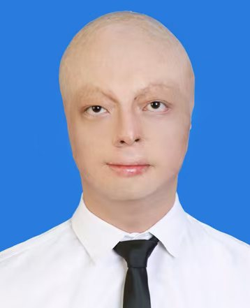
方益凡
交流拓展中心 · 干事
年级2025级
专业自动化
校区四牌楼校区
在社部门交流拓展中心
在社时间一年
"所有的大人最初都是孩子，但很少有人记得这一点。"
我的小小星球

一年耕耘，一份初心
大家好，我是方益凡，2025级本科生，现就读于自动化专业，在四牌楼校区学习生活。
大一期间，我在交流拓展中心工作了一年。在田学姐和牛学姐等热心的学长学姐的悉心指导下，我参与了社内众多活动的支持工作——从前期筹备到现场执行，从物资管理到人员协调，每一段经历都让我对"服务"二字有了更深的理解。
在社会实践活动中，我系统学习了公众号内容的撰写与排版，掌握了图文策划、版面设计等技能。专业分流后，我来到四牌楼校区，希望将这份热情延续下去。
星际旅途中的第一颗星
经东南大学本科招生办公室正式聘任，我负责向家乡的学弟学妹介绍学校概况、专业特色与校园生活。通过线上线下相结合的方式，耐心解答考生疑问，分享真实的大学生活体验，帮助数十名考生做出更合适的选择。
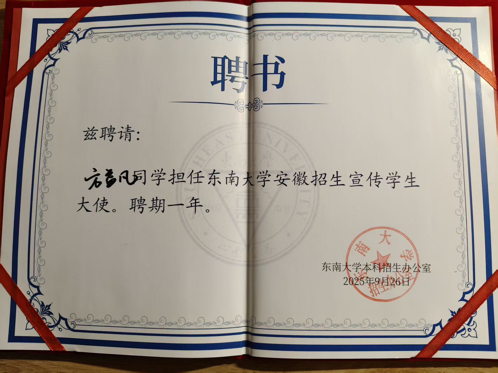
星际旅途中的第二颗星
暑假期间，我参与了爱无疆社区组织的"无疆童行烧伤营"志愿服务活动，走近烧伤儿童及其家庭。
在营期里，我将自己的成长经历与感悟分享给小朋友和家长们，用陪伴和鼓励帮助他们走出阴霾、重拾信心。
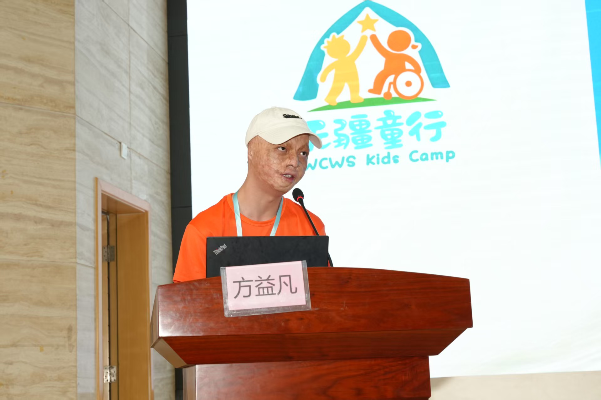
那些微笑，是最好的勋章
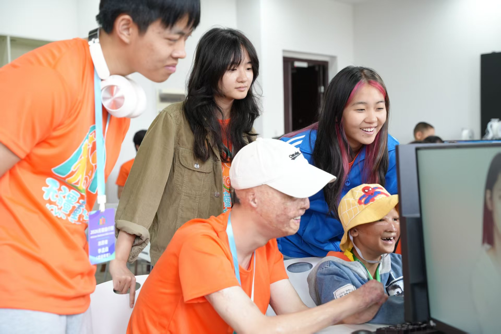
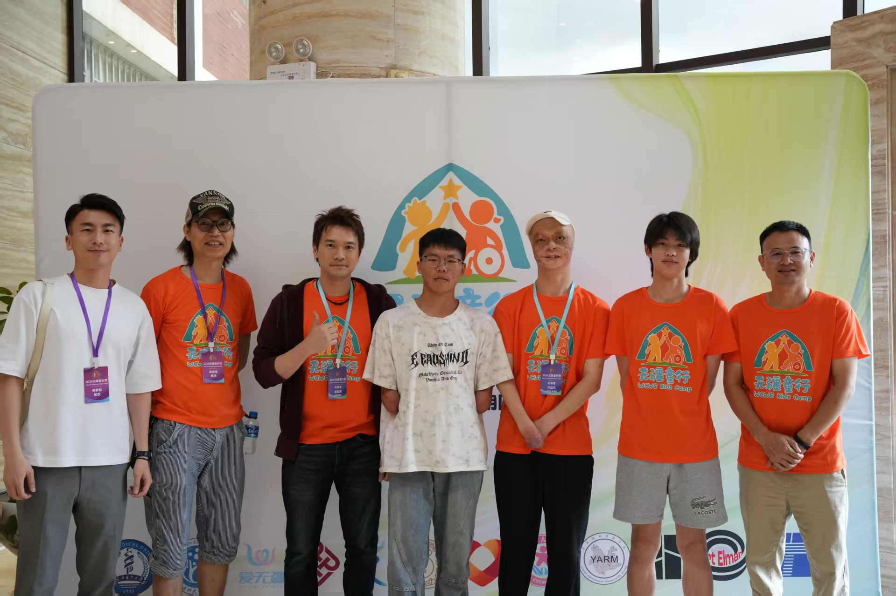
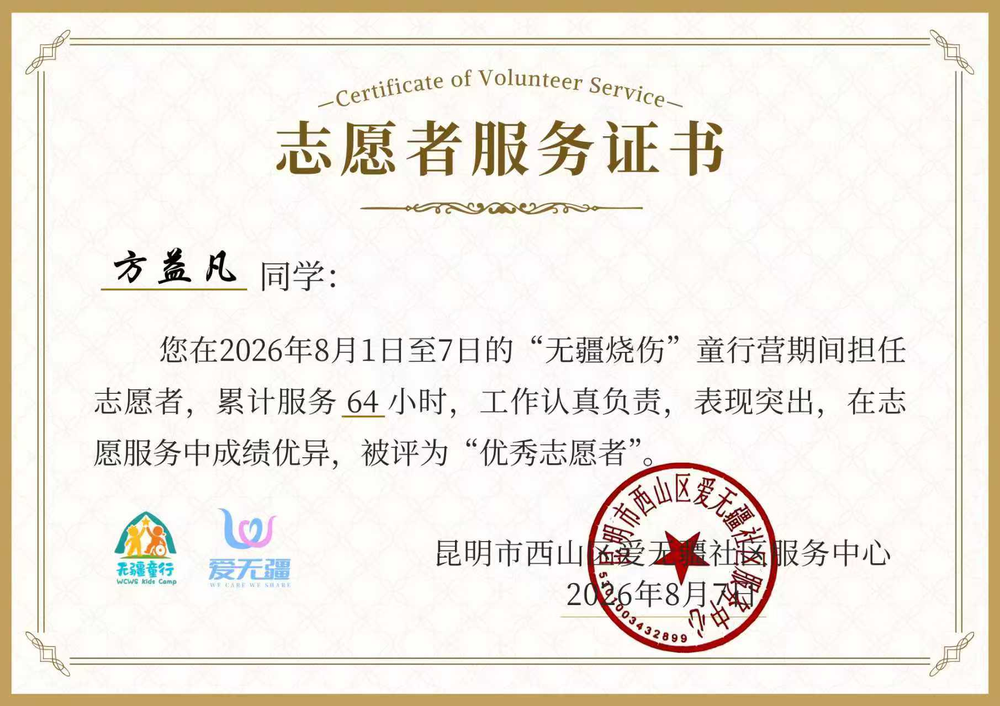
看着孩子们从沉默到微笑、从退缩到主动拥抱，我第一次真切感受到：爱与陪伴，是治愈创伤最好的良药。这段志愿服务让我对唐社"服务社会、奉献爱心"的宗旨有了更切身的体悟。
星际旅途中的第三颗星
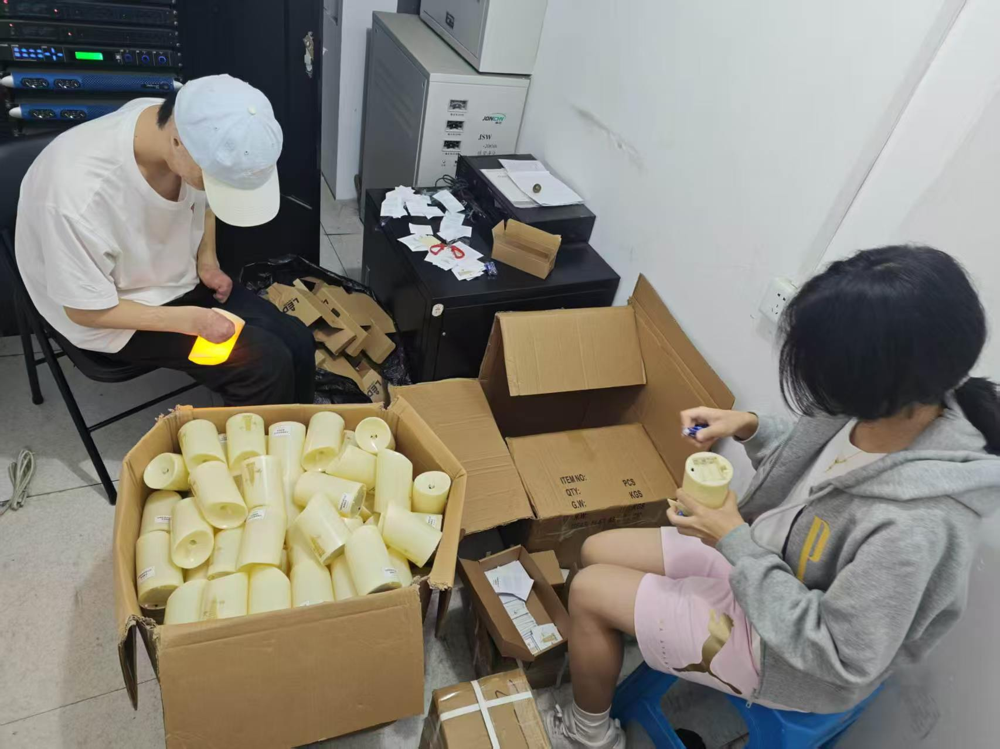
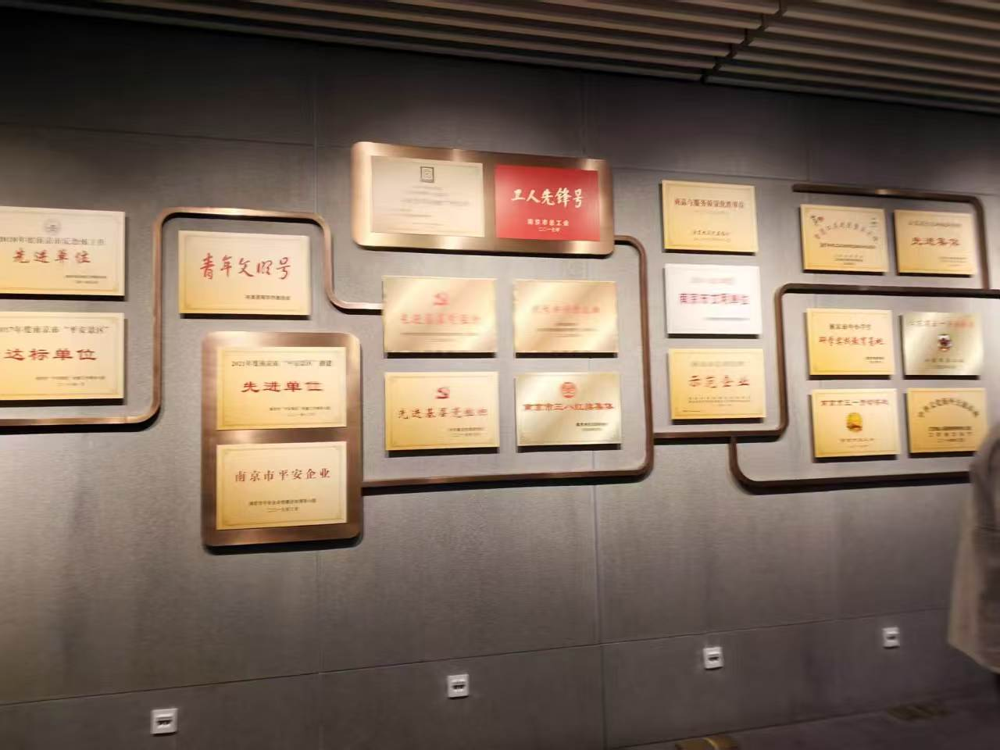
在大报恩寺遗址博物馆担任志愿讲解员，为游客讲述千年古寺的传奇历史，并协助文创物资整理工作。文化的传承，正是我们守护的玫瑰。
星际旅途中的第四颗星
新学期伊始，我主动报名参加了学校的迎新志愿活动，协助新生完成报到注册、行李搬运和校园引导等工作。
从校门口到宿舍楼，从注册点到食堂，我穿梭在人群中，为初来乍到的学弟学妹们答疑解惑，帮助他们尽快熟悉校园环境、适应大学生活。
看到新生们从最初的紧张不安到露出安心的笑容，我仿佛看到了一年前的自己——那个同样迷茫、同样被学长学姐温暖过的自己。如今，这份温暖的接力棒传到了我的手中。
— 星际旅途中的每一站，都是成长 —
与狐狸驯养的日子
从驯养到被驯养
秋季招新 · 寻找同路人
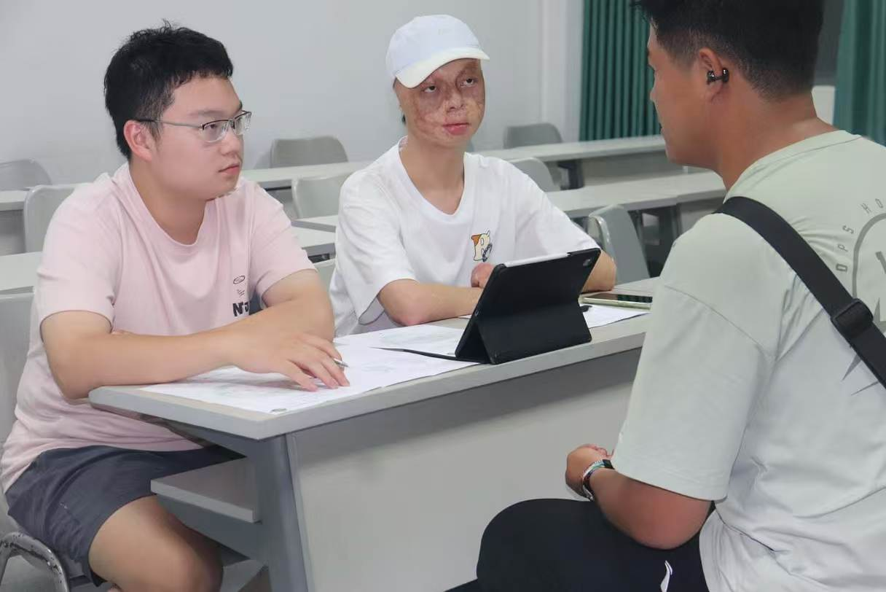
作为交流拓展中心的干事，我担任了秋季招新面试官，参与面试流程的设计与执行。
在与新生面对面交流的过程中，我不仅考察他们的能力与热情，更努力感受他们对公益与服务的初心。
例会与迎新年 · 星球上的聚会
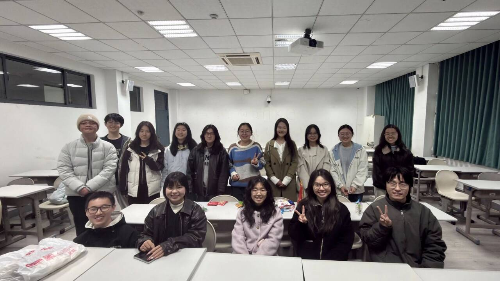
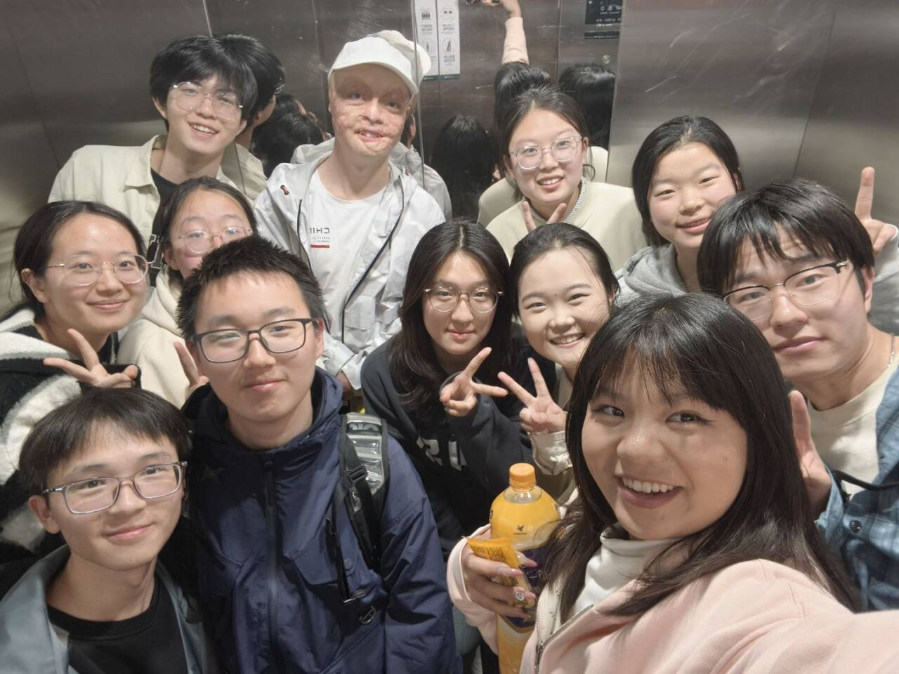
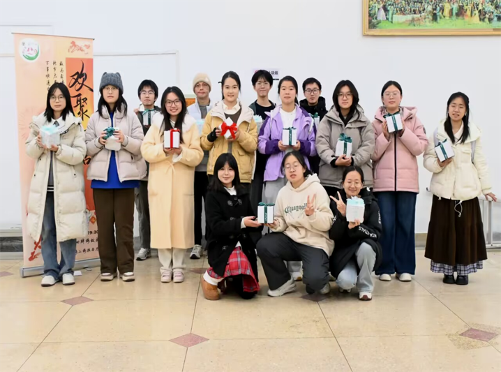
每次例会都是一次思想的碰撞——总结工作、分享心得、规划未来；会后的嬉笑合影，更拉近了彼此的距离。在这里，我学会了倾听与表达，也收获了珍贵的友谊。
新年伊始，部长为每一位部员精心准备了新年礼物。从例会到庆祝，唐社不仅是工作的地方，更是温暖的归属。
守护四牌楼的玫瑰花园
推动部门从"支持型"向"策划型"升级，主导设计符合四牌楼校区气质的品牌活动。
打造有温度、有归属感的社团文化，让每位社员感受到"唐社一家亲"。
让干事从"被分配任务"转向"主动提出想法"，激发集体创造力。
让星星继续发光
发挥公众号运营专长，建立常态化内容输出机制，让唐社的声音被更多人听见。
继承学长学姐优秀经验，结合新校区特点大胆创新，让唐社精神焕发新生命力。
组织更多有意义的志愿服务与公益活动，让爱心真正"无疆"。
"一年前，我怀着忐忑走进交流拓展中心；
一年后，我怀着坚定站在这里，希望成为那个发光发热的人。
唐社给了我温暖，我愿以更大的担当，将这份温暖传递给更多人。"